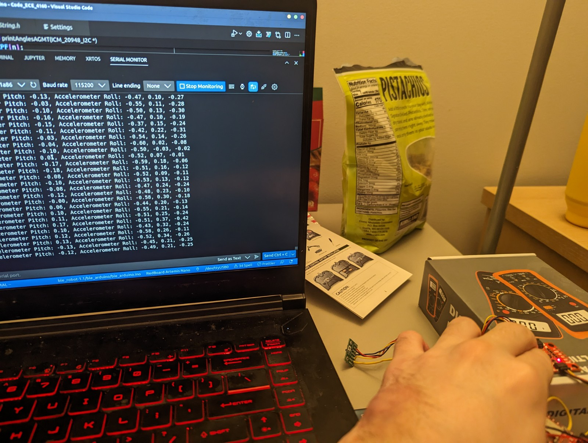
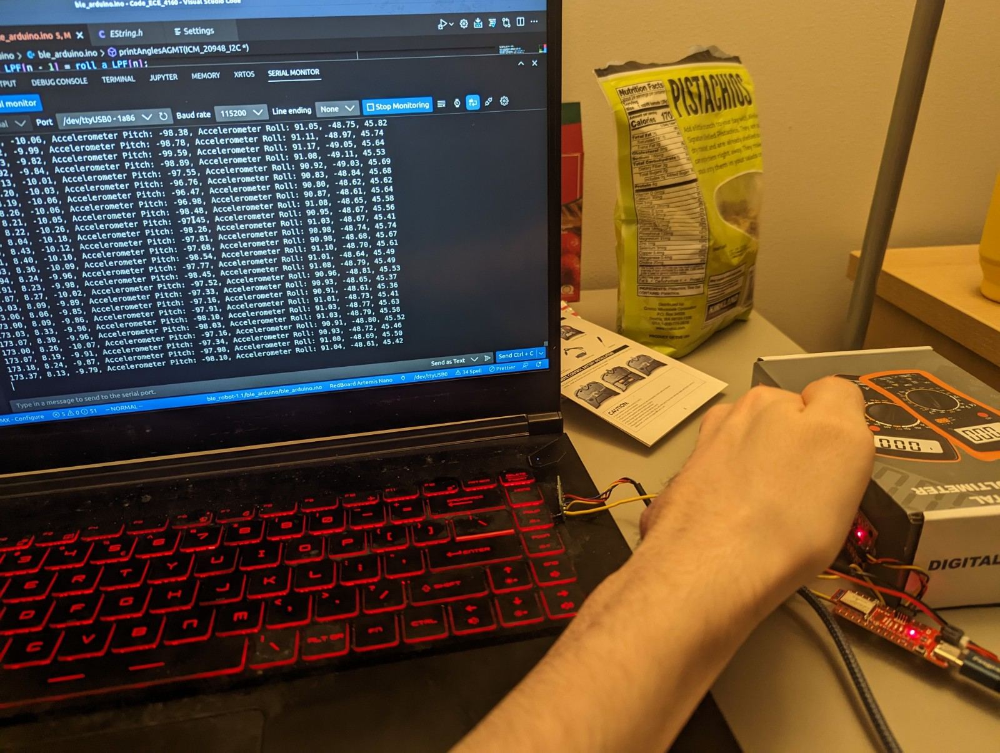
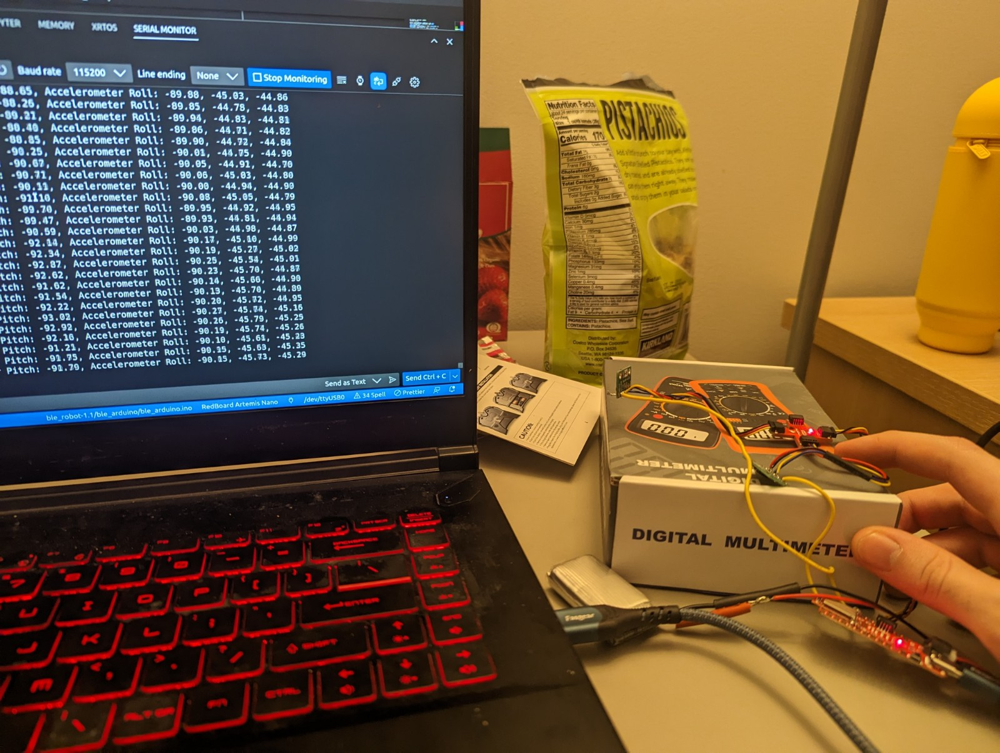
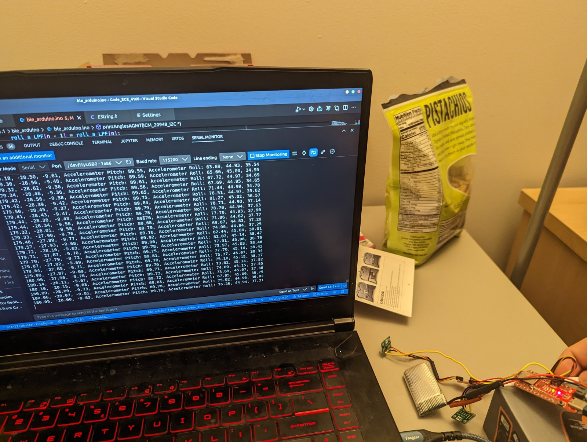
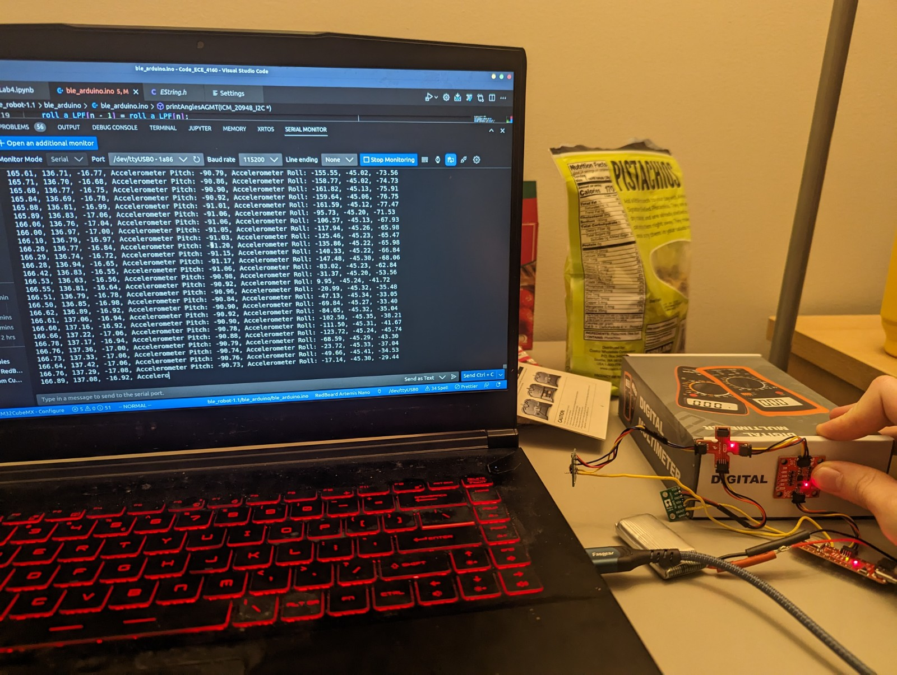

The AD0_VAL represents the last bit of the i2c address of the IMU. This value is only supposed to be 0 if the ADR jumper is closed, the value is 0. The ADR jumper is not closed, so the value is 0.
Acceleration and gyroscope data discussion (pictures recommended)
Accelerometer
Image of output at {-90, 0, 90} degrees for pitch and roll (include equations)
From class,
\(Roll_{accelerometer} = atan(a_x,a_z)\)
\(Pitch_{accelerometer} = atan(a_y,a_z)\)
, so using IMU.accX, IMU.accY, IMU.accZ as x y and z respectively, the pitch and roll could be calculated yielding these results.





Accelerometer accuracy discussion
Noise in the frequency spectrum analysis
Include graphs for your fourier transform
Discuss the results
Gyroscope
Include documentation for pitch, roll, and yaw with images of the results of different IMU positions
Demonstrate the accuracy and range of the complementary filter, and discuss any design choices
Sample Data
Speed of sampling discussion
Demonstrate collected and stored time-stamped IMU data in arrays
Demonstrate 5s of ToF and IMU data sent over Bluetooth
Cut the Coord
Discussion on battery distinction
Picture of your Artemis connected to the 650mAh battery
Record a Stunt
Include a video (or some videos) of you playing with the car and discuss your observations